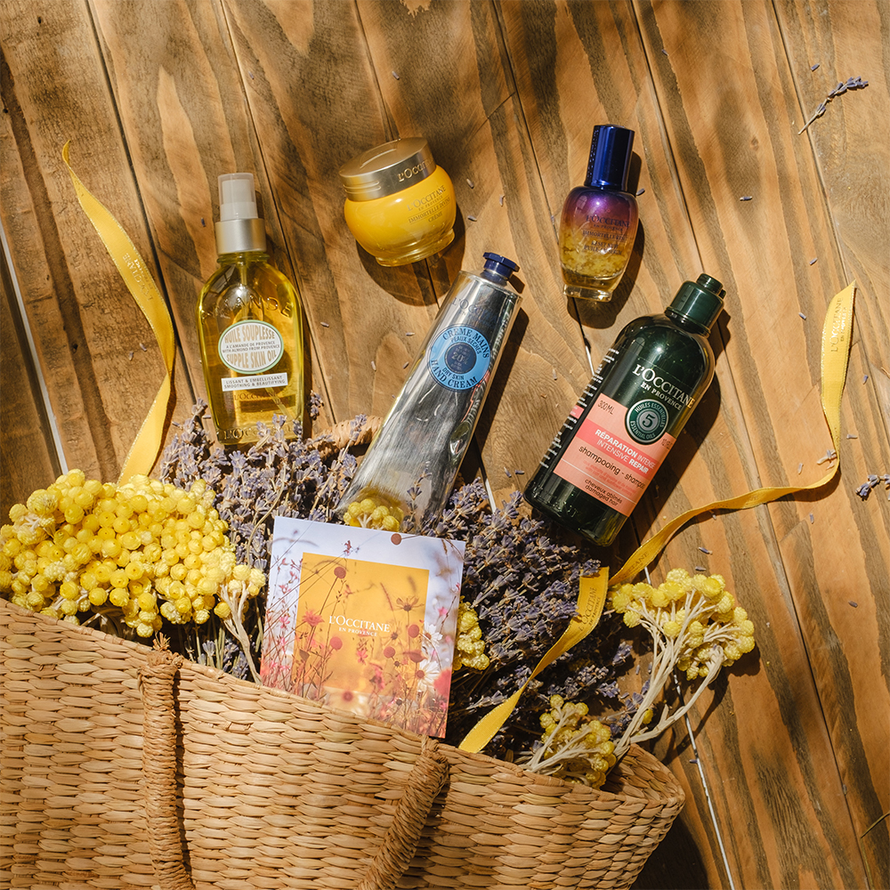

‹ Back

E-commerce Website
UX/UI Design
2018
As a Designer I did...
- Audited and challenged the existing filter system to identify usability gaps and optimization opportunities.
- Proposed and facilitated a guerrilla testing session with internal employees.
- Synthesized findings and conducted a detailed analysis of user feedback to inform design decisions.
- Designed refined mockups based on validated insights from user testing.
- Redesigned the product search experience in collaboration with Algolia, leveraging its fast search API to improve speed, relevance, and overall usability.
- For L'Occitane en Provence Japan, integrated the social platform LINE to enable account creation and login via social authentication.